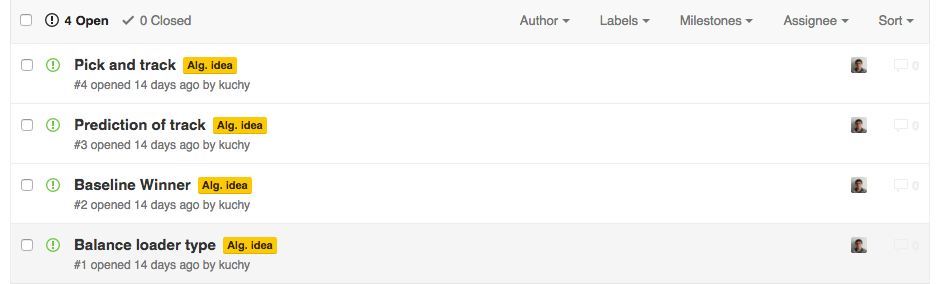
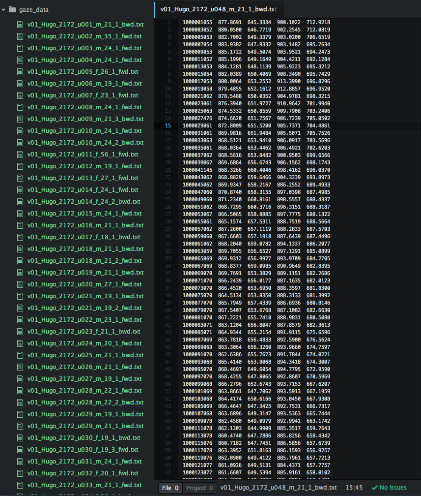
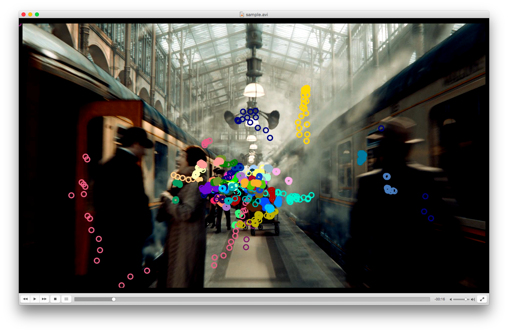
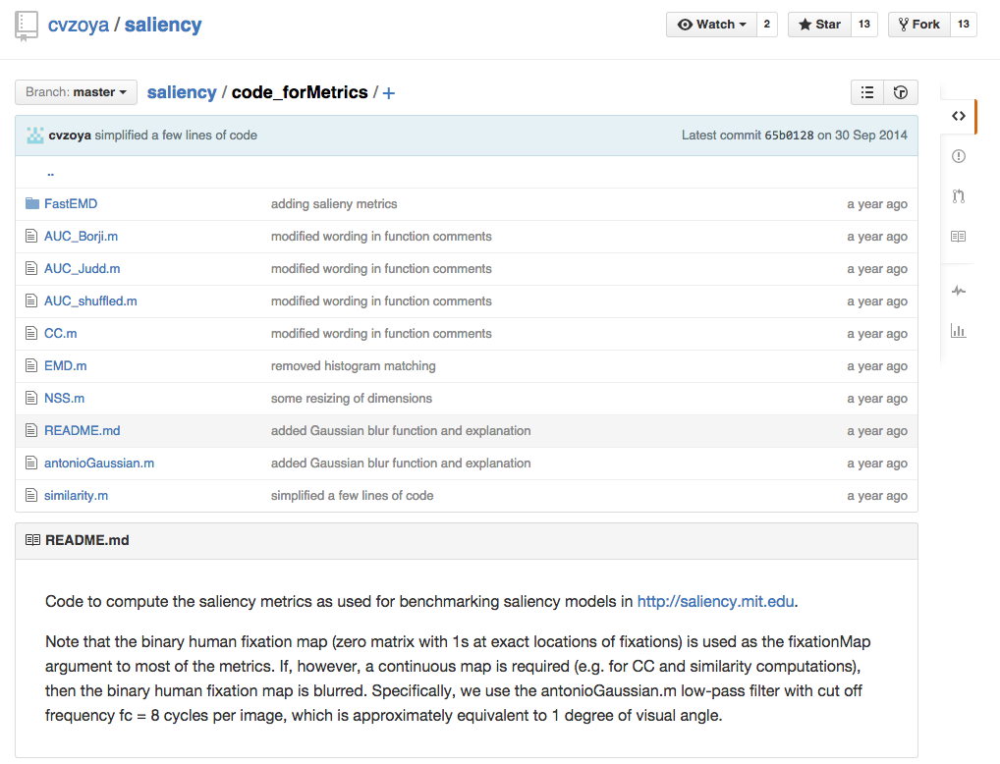
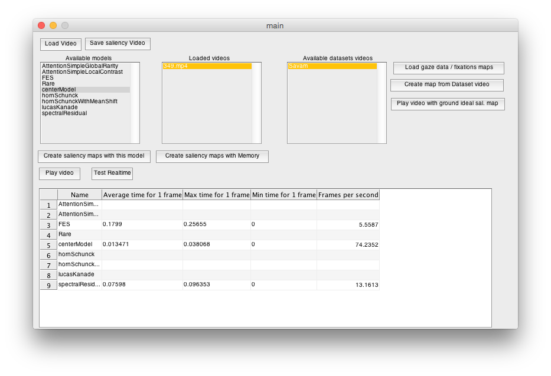

Created by Martin Kuchyňár / @kuchy
Ostatné zložky: nízkoúronové príznaky, zvuková stopa (COUTROT model)
Navrhy na nove modely: https://github.com/kuchy/diploma/issues
Obsahuje 41 videí, ktoré pozorovalo 50 rôznych používateľov vo veku 18-56
Stiahnutelné všetky videa + vizualizacie fixacii, raw gaze_data (nie fixacie) - pre lave okolo a prave oko
Koli meraniu metrik je potrebne napisat parser
Nacita raw data z eyetrackera
Vyzualizácia (kôli kontrole dát v pripravenej štruktúre)
Validácia oproti zverejneným videám
Implmentovanie prístupných metrík
https://github.com/cvzoya/saliency/
Predprogramovane vsetky zakladne metriky ako AUC, CC, EMD, NS...
Volne dostupné videa
Priamo .mat subory ale niesu to fixacie + nieje to s cim porovnat aspon vizaulizaciu
Koli meraniu metrik je potrebne napisat parser,
Testovanie ľubovolného počtu saliency modelov na ľubovolnom počte videí. 
Simultálne sledovanie videa a saliency máp
Predné strany v štandardnej forme (latex)
Štandardizovana bibliografia (BibTeX formát)
Úvod - Napísaný vyžaduje este gramatickú korektúru
Prvá kapitola - Napísaná z 90%
Druhá a tretia kapitola - Určené základné sekcie
Spolu < 40 stran aktuálna verzia dostupná online
Miesto pre návrhy a otázky
alebo
Pridaj issue na githube
email: kuchynar1@uniba.sk